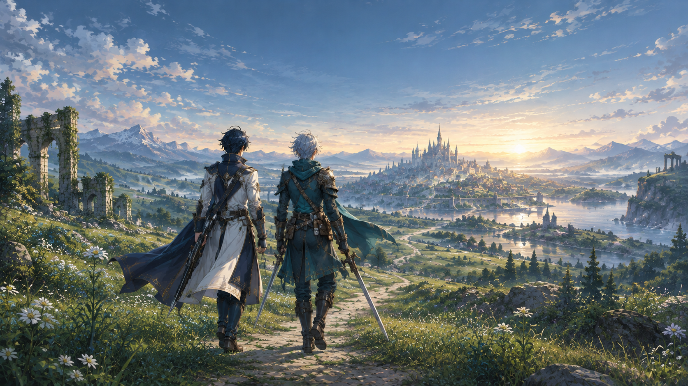
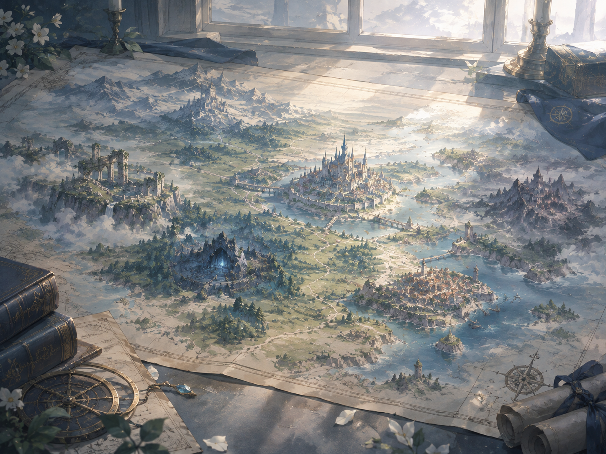
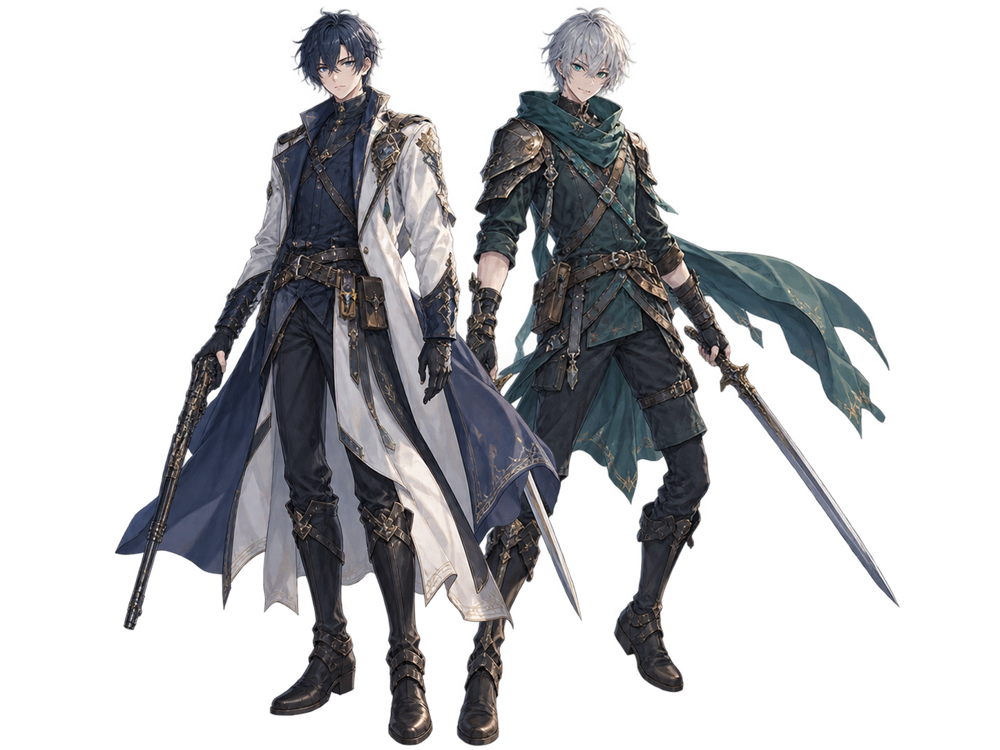

エリオット・ハーウッド
冷静な判断力と鋭い観察眼を持つ青年。銃による遠距離攻撃と付与魔法を使い分け、戦況を有利に導く。


少しずつ短くなっていく昼と、世界を覆い尽くそうとする夜。変わりゆく空の下で、人々は日々を送りながら、世界に起きている異変と向き合っている。
古代の遺跡や残された記録を手がかりに、世界の各地を巡る旅が始まる。
WORLD & STORY を見る
冷静な判断力と鋭い観察眼を持つ青年。銃による遠距離攻撃と付与魔法を使い分け、戦況を有利に導く。
気さくで面倒見がよく、思い立ったらまず行動する青年。双剣による素早い連続攻撃で敵陣へ切り込む。
異なる強みを持つ二人は、互いを信頼しながら数々の戦いに挑んでいく。
マス目の戦場で味方と敵が交互に行動。配置や武器、魔法の使い分けが勝敗を左右する。
ワールドマップを巡り、サブクエストや各地の出会いを通じて冒険を広げよう。
20人以上の仲間を育て、上位職や武器・アクセサリーを組み合わせて自分だけの部隊を作ろう。
ECHOES OF DAWN / 夜明けの残響
発売予定年などの詳細は、今後の発表をお待ちください。